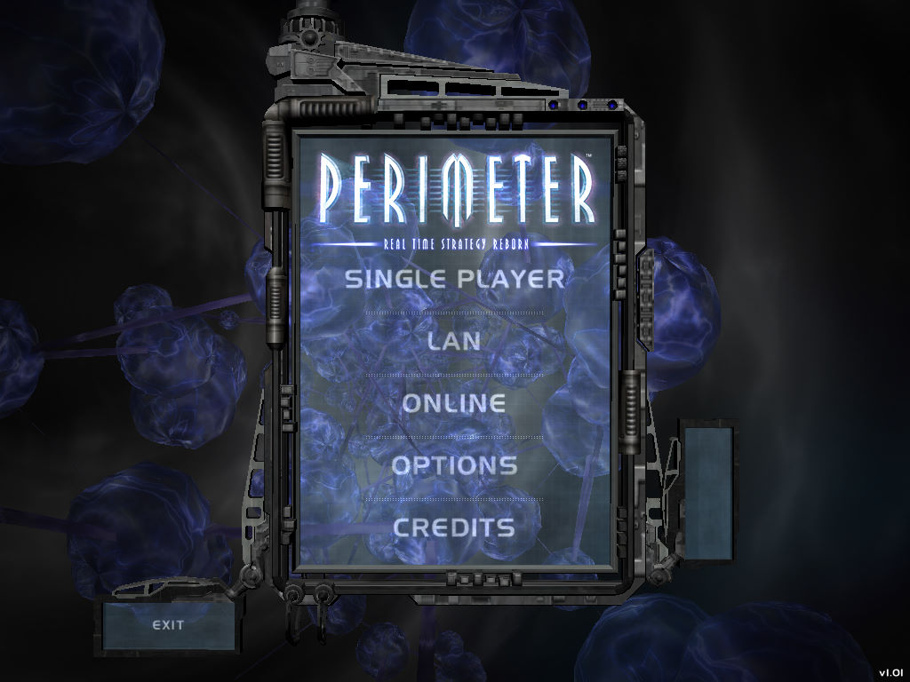
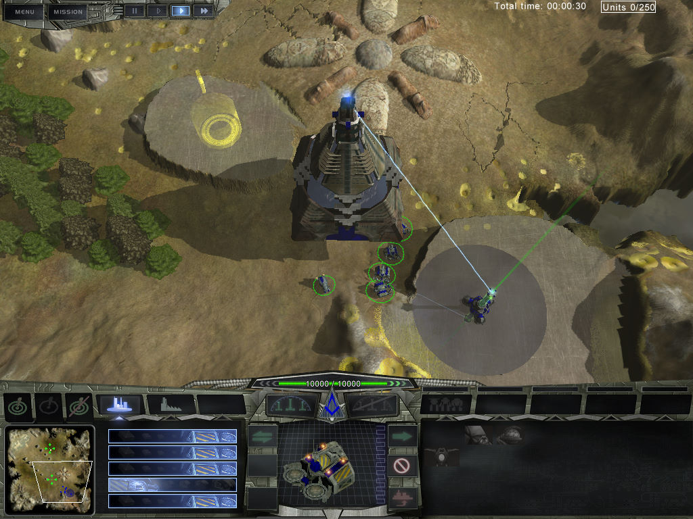
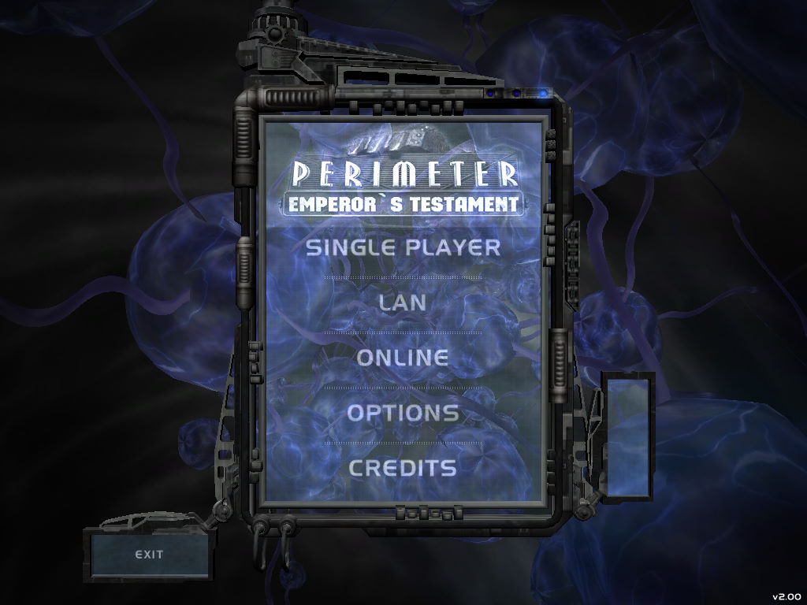
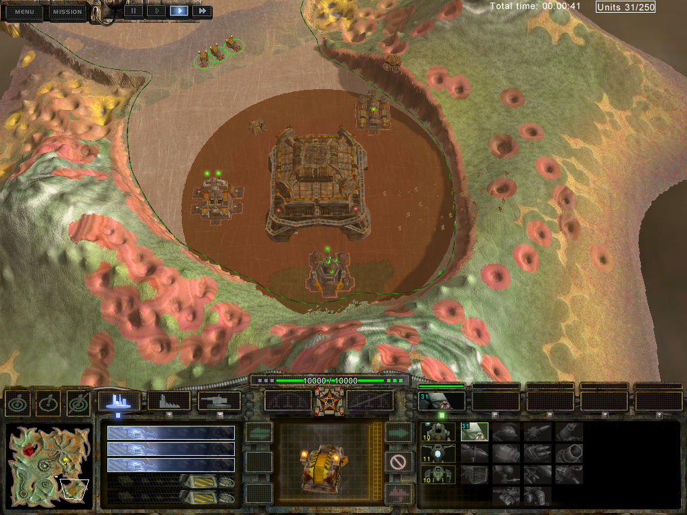

名稱：異次元啟示錄／太空堡壘 (Perimeter，英文版)
簡介：K-D Lab與1C 2004年共同開發的即時戰略遊戲，由Codemasters代理發行。2005年推出
「皇帝遺囑（Emperor's Testament）」獨立資料片 [待補]。




保護：主程式為光碟SecuROM 5.03，資料片為光碟SecuROM 7.24
檔案：Perimeter_Update_1.01.rar = 主程式1.01更新檔
nocd101.rar = 主程式1.01免光碟檔
nocdx.rar = 資料片免光碟檔